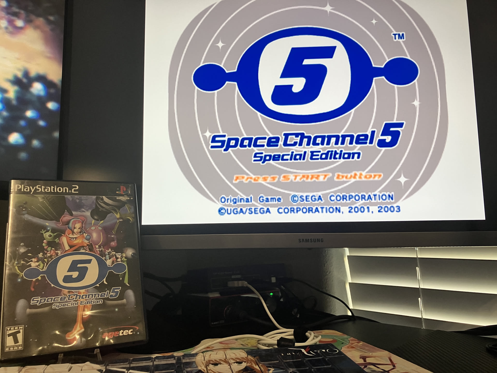

1game1week - Week 25 (6/18/25) - Space Channel 5 Special Edition
Hey all! It's week 25! (6/18 -> 6/25)
First time in a little while I actually post on a Wednesday.
Bought a flip phone today. I'm trying to dumb down (lol) my life. It probably sounds weird but I think having a computer following me around every second of the day has made me miserable for years.
Doom scrolling, checking notifications, YouTube shorts, seeing if I've had anything come up... Isn't it just too much? It's better when I can just sit at my computer and then break away whenever I want without being chased by another one that constantly demands my attention.
I feel as if I've forgotten what being bored feels like, since I have a near-endless amount of entertainment at my fingertips, every second of the day. I've lost sight of the real world because I've substituted it with a digital world, a long time ago.
This blog was originally made for me to have a window open and let out my thoughts / let people know I'm still alive while hiding under a rock and leaving social media forever. Who knows? Maybe that day is closer than I think.
Even then, who am I to denounce smartphones, with all the neat things they provide nowadays? High-resolution cameras, music streaming, GPS systems, multifactor applications... I'll have to find ways of getting around these.
Who knows? If I end up actually following through with not using my smartphone I might just make another post with my experience.
Do I sound like a hipster yet? Or have I awoken something? Ha.
Jokes aside... I'm keeping it as a trial basis, just to see how I fare without my iPhone. Maybe I'll take up yet another hobby.
Actually, I'm decently behind on my normal gaming hobby. I've been soldering nonstop for a little while. Picked up a bug for it and I'm having a lot of fun.
Speaking of which, I have an update for the post I made a couple weeks back for the OtakuGames SCART switch. I ended up designing a PCB myself and soldering to the Arduino Nano. I'll have a post about it soon, I really had a lot of fun with it. In the meantime, some of the documentation in this link was written by me. Even if you don't get what's going on, I just wanted to highlight it!
Oh! Next week we're hitting halfway through the year. Time's flown by!
I'm planning on doing a slightly more detailed post with stats on what I've played up to this point, even the games I decided not to include in 1g1w. This includes genres and series and stuff so I can see what I'm trending to. I know top 1 played franchise so far this year is Higurashi. Top 1 genre is probably visual novel (also due to Higurashi).
Who knows? Maybe I'll also rank the games based on how I feel about them so far.
I really would like to get some analytics on what I'm enjoying and playing through this year. See what I'm playing too much (VNs), see what I should play more, see average length of the games I'm playing...
Anyways!
New games from 6/11 -> 6/17:
None! This is the second time this month.
Currently, my backlog is at +13 (lower is better, +0 from last week).
And onto 1g1w. Once again, a game is considered "beaten" if I've accomplished the main objective of the game.
GAME: Space Channel 5 Special Edition (1 and 2)
PLATFORM: PlayStation 2
STARTED ON: 5/4
BEATEN ON: 5/4
Man, these games are fun.
Pretty strict on timing though. Maybe I just suck?
Played the first game on Dreamcast last year, and really wanted to give 2 a try. Even if it's essentially more of the same, it's really fun.
I ended up playing both games, as I figured they're both decently short and wouldn't feel quite right in just saying "well I played 2 but not 1 so it doesn't count" etc.
There's a huge charm to arcade-ey games. When you're not relying on a huge overarching narrative, it's great seeing games that turn up the "this game is fun" aspect to 11 without falling back on "but the story though...".
Even for a more arcade-ey experience, even the narrative is fun and quirky. I daresay characters are interesting and I still remember how hard I laughed at hearing "They got Space Michael!" for the first time.
Some folks reading this know already, but I wasn't really a Sega consoles guy growing up, so I missed out on experiences like this for a long, long time.
Doesn't it have such an interesting aesthetic too? This is a pre-turn-of-the-century game so it's heavily going for that futuristic space-ey look we all fell in love with when we had whimsy in our hearts.
There was even an MTV show planned for Ulala! Ended up going nowhere unfortunately... I think this video in particular was lost media for a while.
Gosh, I'm not even mentioning the music. It's probably the most important part of this game. Space Channel 5 has such an incredibly banging soundtrack. I'm listening to it as I'm typing and it's taking all my might not to just stop and vibe to the music.
There isn't a lot left to say about Space Channel 5 from me. It's a really fun game and its quirky narrative and aesthetic make it pop out a lot. Going for full clears while listening to groovy music made the experience great. Maybe this game made me realize anything I play after this will pale in comparison and that's why I haven't beaten much since... ha!
I suffered a bit with input delay. I read online that pretty much everyone suffered from input delay (either that or we all suck). I played on an HDMI-modded system (digital->digital). In theory I was only getting 4ms or so of lag which... well that's 0.004 of a second so can't quite be that.
For a while, I was playing with a Bluetooth controller (another PS2 mod), but ended up switching out for a wired pad to eliminate as many variables as I could. I did a bit better... until I didn't, but hey, that's life!

Thanks for reading! If you need to contact me for any reason, please feel free to email me at aru@hoshikawa-aru.com.